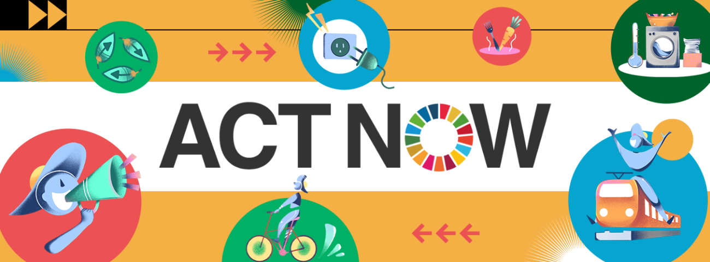
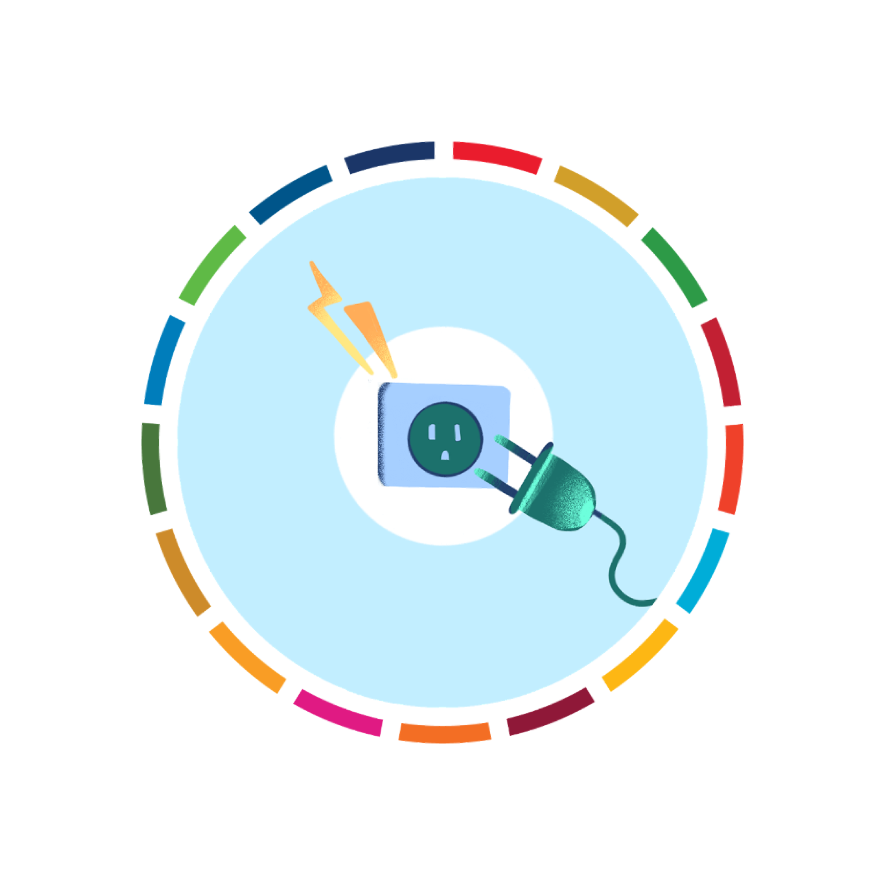
การผลิตไฟฟ้าและความร้อนส่วนใหญ่ใช้พลังงานจากถ่านหิน น้ำมัน และก๊าซ เราสามารถใช้พลังงานให้น้อยลงได้โดยการปรับระดับการทำความร้อนและความเย็นให้ต่ำลง เปลี่ยนมาใช้หลอดไฟ LED และเครื่องใช้ไฟฟ้าประหยัดพลังงาน ซักผ้าด้วยน้ำเย็น หรือตากผ้าแทนการใช้เครื่องอบผ้า
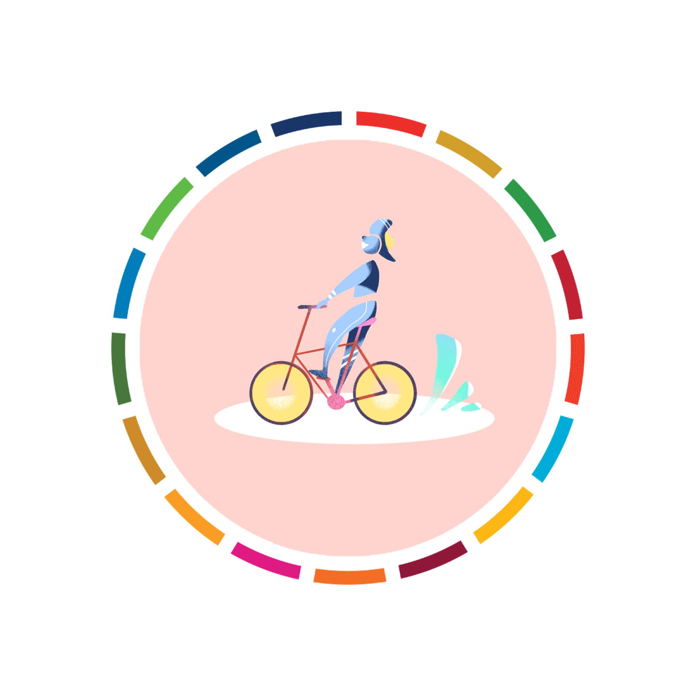
ถนนทั่วโลกแน่นขนัดไปด้วยยานพาหนะซึ่งส่วนใหญ่ใช้น้ำมันดีเซลหรือเบนซินเป็นเชื้อเพลิง การเดินหรือขี่จักรยานแทนการขับรถจะช่วยลดการปล่อยก๊าซเรือนกระจก ทั้งยังช่วยเสริมสร้างสุขภาพและความแข็งแรงอีกด้วย หากคุณต้องเดินทางไกล ลองเปลี่ยนมาโดยสารรถไฟหรือรถประจำทาง และติดรถไปกับผู้อื่นเมื่อทำได้
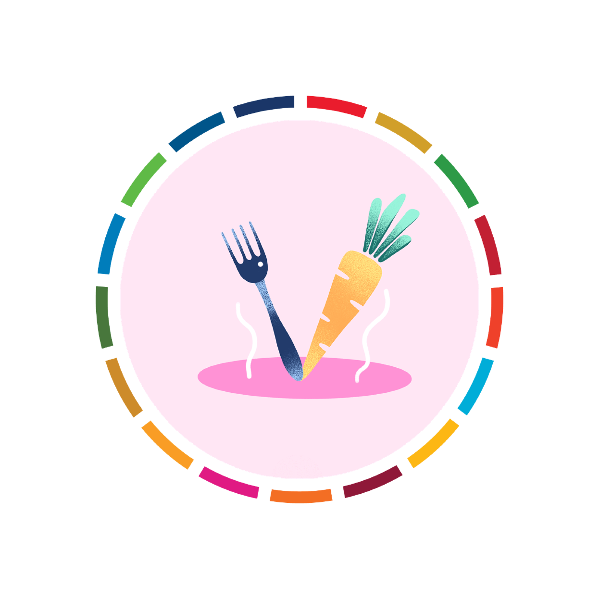
แค่อาหารจากพืช ผลไม้ ธัญพืชเต็มเมล็ด พืชตระกูลถั่ว และเมล็ดพืชมากขึ้น และลดเนื้อสัตว์และผลิตภัณฑ์จากนมให้น้อยลง คุณก็สามารถลดผลกระทบต่อสิ่งแวดล้อมได้อย่างมาก โดยทั่วไปกระบวนการผลิตอาหารที่มาจากพืชจะสร้างก๊าซเรือนกระจกน้อยกว่า อีกทั้งยังใช้พลังงาน ที่ดิน และน้ำน้อยกว่า
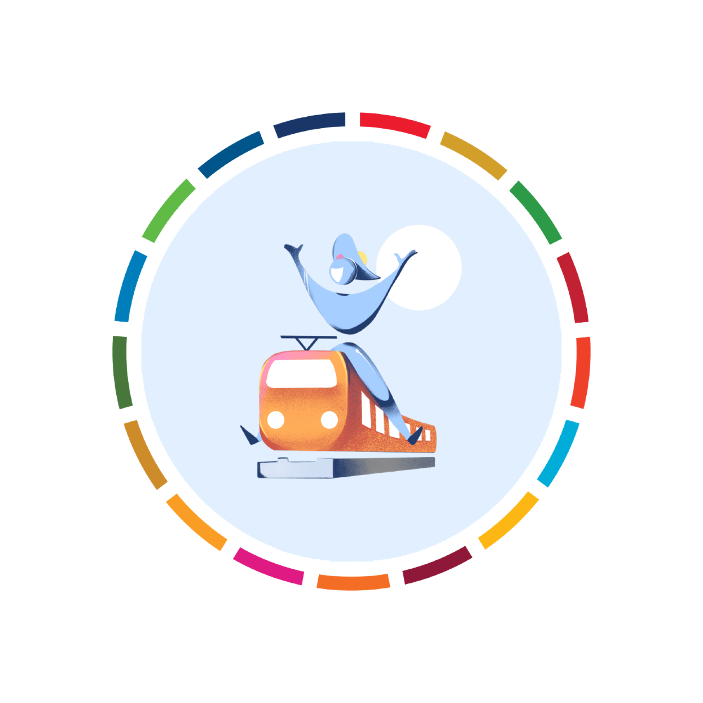
เครื่องบินใช้เชื้อเพลิงฟอสซิลอย่างมหาศาล และปล่อยก๊าซเรือนกระจกจำนวนมาก การนั่งเครื่องบินให้น้อยลงจึงเป็นหนึ่งในวิธีที่เร็วที่สุดในการลดผลกระทบต่อสิ่งแวดล้อม หากทำได้ ให้คุณนัดพบกันในทางออนไลน์ ขึ้นรถไฟ หรือยกเลิกการเดินทางระยะไกลนั้นไปเลย
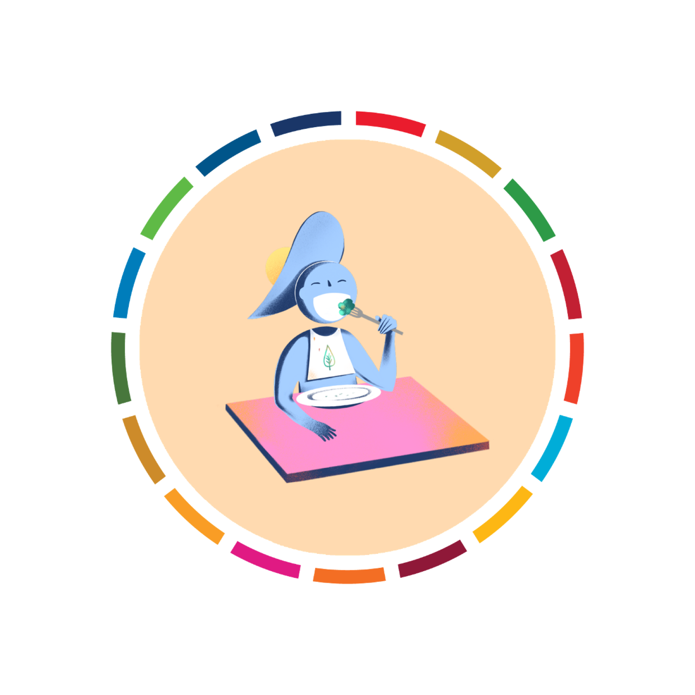
ทุกครั้งที่คุณทิ้งอาหาร คุณกำลังทิ้งทรัพยากรและพลังงานที่ใช้ในการเพาะปลูก/เลี้ยง ผลิต บรรจุ และขนส่งอาหารนั้น ๆ และอาหารที่บูดเน่าอยู่ในบ่อขยะก็จะปล่อยก๊าซมีเทนซึ่งเป็นก๊าซเรือนกระจกที่รุนแรงมาก ดังนั้น รับประทานอาหารที่คุณซื้อมาให้หมดและส่วนที่เหลือให้หมักทำปุ๋ย
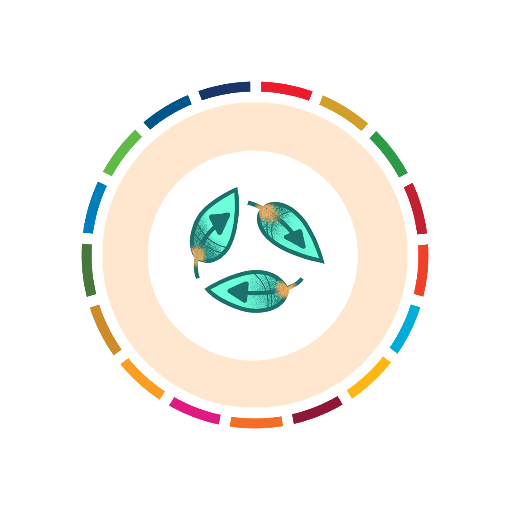
อุปกรณ์ไฟฟ้า เสื้อผ้า และสินค้าอื่น ๆ ที่เราซื้อล้วนแล้วแต่ก่อให้เกิดการปล่อยคาร์บอนไดออกไซด์ ณ จุดใดจุดหนึ่งของการผลิต ตั้งแต่การหาวัตถุดิบ ไปจนถึงการผลิต และการขนส่งสินค้าสู่ตลาด คุณสามารถช่วยรักษาสภาพอากาศของเราด้วยการซื้อของให้น้อยลง ซื้อของมือสอง ซ่อมหากซ่อมได้ และรีไซเคิล
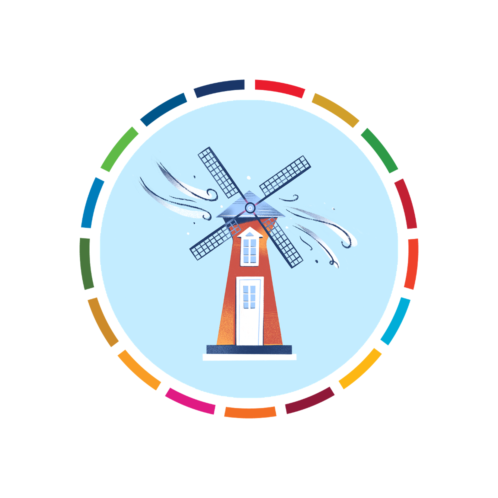
สอบถามบริษัทสาธารณูปโภคของคุณว่าพลังงานที่คุณใช้ในบ้านนั้นผลิตมาจากน้ำมัน ถ่านหิน หรือก๊าซหรือไม่ ถ้าเป็นไปได้ ให้ลองเปลี่ยนไปใช้แหล่งพลังงานหมุนเวียน เช่น ลมหรือพลังงานแสงอาทิตย์ หรือติดตั้งแผงโซลาร์เซลล์บนหลังคาเพื่อผลิตพลังงานให้บ้านของคุณ
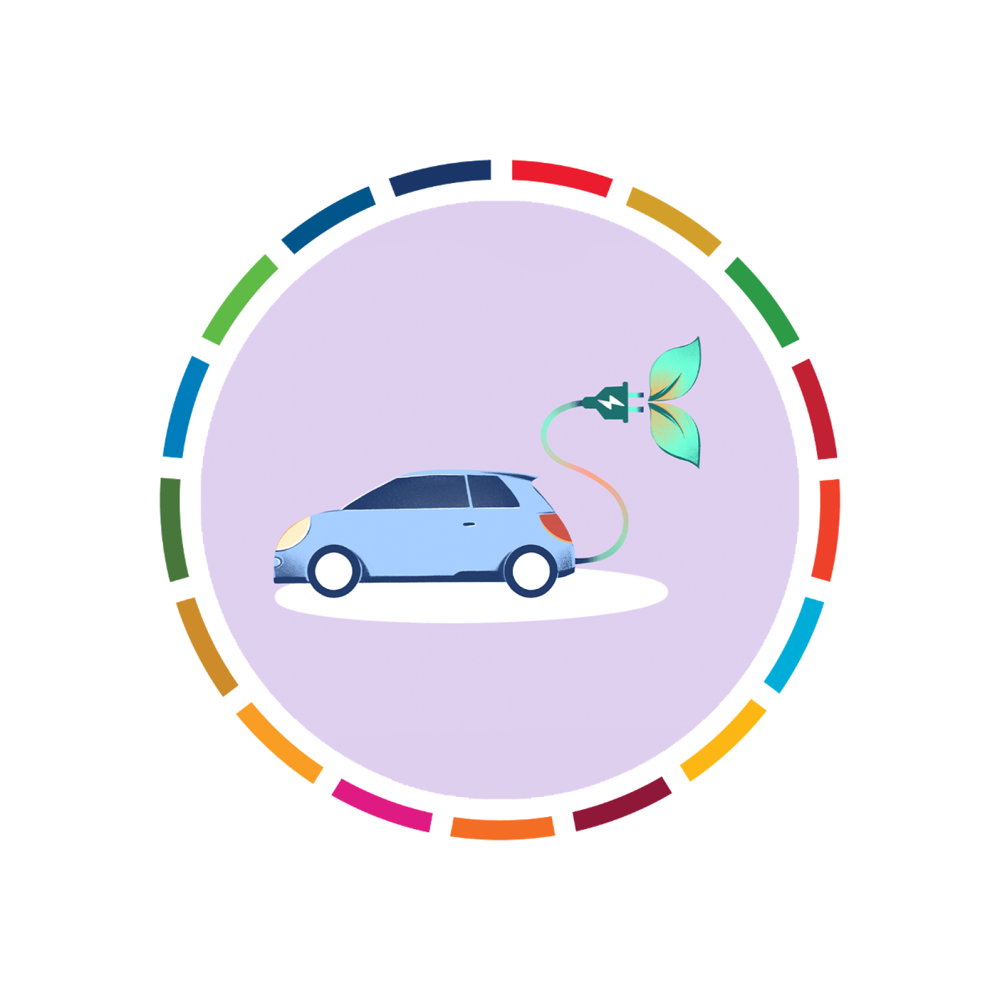
หากคุณวางแผนที่จะซื้อรถยนต์ ลองเลือกดูรถยนต์ไฟฟ้าซึ่งตอนนี้มีหลายรุ่นและราคาถูกลง แม้ว่าไฟฟ้าที่ใช้จะยังผลิตมาจากเชื้อเพลิงฟอสซิลอยู่ แต่รถยนต์ไฟฟ้าก็ช่วยลดมลพิษทางอากาศและปล่อยก๊าซเรือนกระจกน้อยกว่ารถยนต์ที่ใช้แก๊สหรือดีเซลอย่างมีนัยสำคัญ
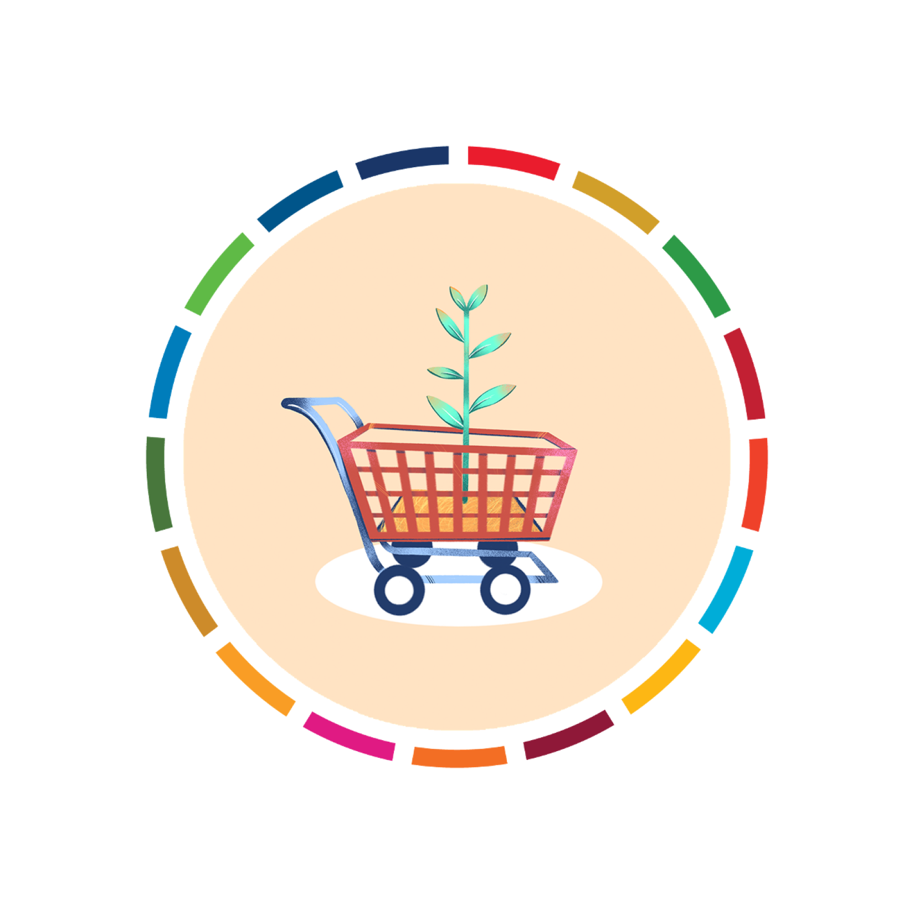
ทุกการใช้จ่ายของเราส่งผลกระทบต่อโลกทั้งสิ้น คุณมีอำนาจว่าจะเลือกสนับสนุนสินค้าและบริการใดเพื่อลดผลกระทบต่อสิ่งแวดล้อม ให้คุณซื้ออาหารตามฤดูกาลที่ผลิตในท้องถิ่น เลือกผลิตภัณฑ์จากบริษัทที่ใช้ทรัพยากรอย่างมีความรับผิดชอบและมุ่งมั่นที่จะลดการปล่อยก๊าซเรือนกระจกและของเสีย
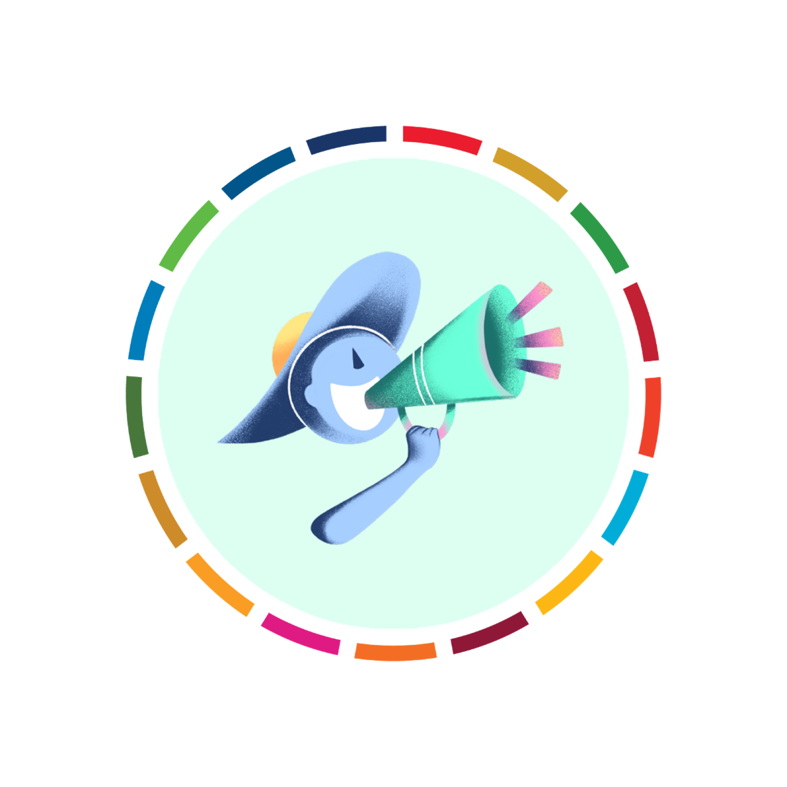
เปล่งเสียงของคุณและชักชวนผู้อื่นให้ร่วมลงมือด้วยกัน นี่เป็นหนึ่งในวิธีที่รวดเร็วและมีประสิทธิภาพที่สุดในการสร้างการเปลี่ยนแปลง ชักชวนเพื่อนบ้าน เพื่อนร่วมงาน เพื่อน และครอบครัวของคุณ บอกให้ธุรกิจต่าง ๆ รู้ว่าคุณต้องการเห็นการเปลี่ยนแปลงที่กล้าหาญและชัดเจน ตลอดจนเรียกร้องให้ผู้นำท้องถิ่นและระดับโลกดำเนินการในทันที